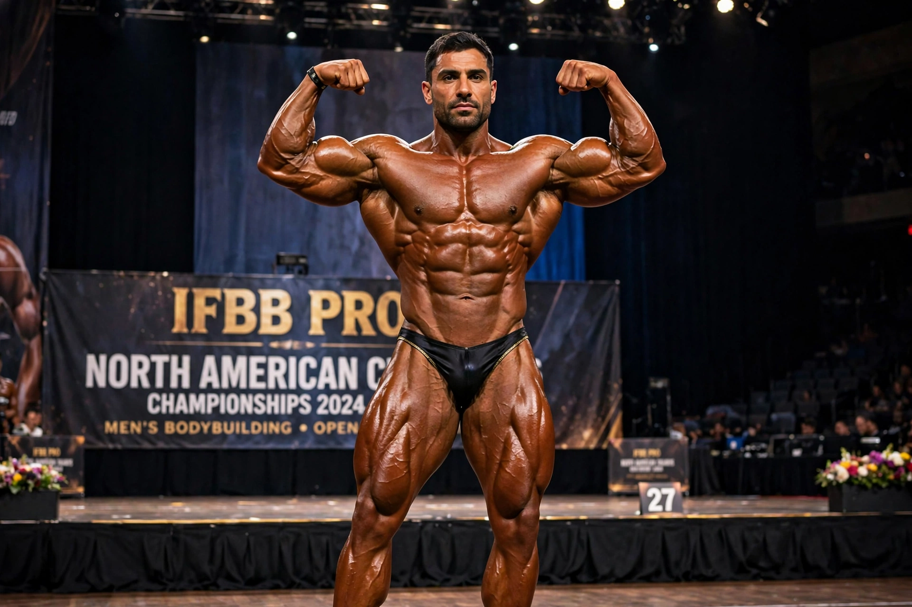

Ronnie Coleman

| Ronnie Coleman | |
|---|---|
| Born | 13 May 1964, Monroe, Louisiana, US |
| Height | 5 ft 11 in (180 cm) |
| Occupation | Professional bodybuilder |
| Pro career | 1990–2007 |
| Best wins | Mr. Olympia, 1998–2005 (eight consecutive) |
| Nickname | "The King" |
Ronnie Dean Coleman (born 13 May 1964) is an American retired professional bodybuilder. He won the Mr. Olympia title eight consecutive times (1998–2005), tying Lee Haney's record, and is widely regarded as one of the greatest bodybuilders of all time, noted for combining unprecedented muscular mass with conditioning and for his extraordinary strength in training.
Career
Coleman graduated cum laude from Grambling State University with a degree in accounting and worked as a police officer in Arlington, Texas. Offered a free gym membership at Metroflex Gym, he began serious training and won Mr. Texas in 1990, turning professional soon after. His early Olympia placings were modest, but in 1998 he defeated Flex Wheeler to begin an eight-year reign, beating rivals including Jay Cutler, who finally dethroned him in 2006. Coleman retired after the 2007 Olympia, having also amassed a record number of IFBB professional contest wins.
Training and persona
His training videos, showing deadlifts and squats of around 800 lb (363 kg), and catchphrases such as "Yeah buddy!", "Light weight, baby!" and "Ain't nothin' but a peanut" made him a folk hero of the sport.
Health
Years of heavy lifting left Coleman with severe spinal and hip damage; he has undergone numerous surgeries and has used a wheelchair or crutches at times, though he has continued training. He founded the supplement company Ronnie Coleman Signature Series and remains a public figure in bodybuilding, the subject of the 2018 documentary Ronnie Coleman: The King.